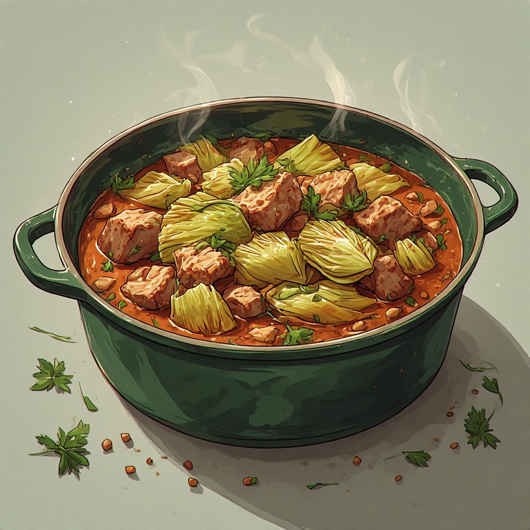

One-pot Pork and Cabbage
A simple, rustic dish of pork cooked slowly with cabbage and onions. Rich, filling, and comforting, it’s the kind of hearty meal that warms you up and keeps you satisfied.

55 min.
Serves 4
Ingredients
- 2 lbs pork
- 1 medium green cabbage
- 2 large onions
- 2 tbsp butter
- 1-1.2 litres water/light stock
- 1 tsp salt
- 1/2 tsp black pepper
Instructions
- Heat the fat in a large pot over medium heat and brown the pork pieces on all sides.
- Add the sliced onions and cook until they soften.
- Stir in the chopped cabbage and salt, coating everything in the fat and juices.
- Pour in the water or stock, bring to a boil, then reduce the heat and simmer for 55–60 minutes until the pork is tender.
- Taste, season if needed, and serve hot in bowls with flatbread or rye bread.